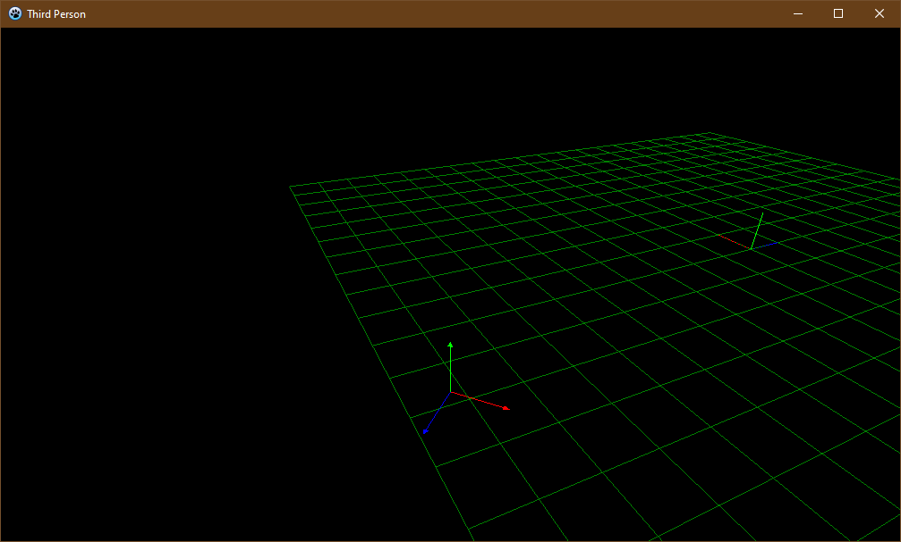

TP shoulder camera:
Jumping off of the little firstperson spectator you may have seen here earlier, this new module is a continuation on it. At the heart of it, this new thirdperson module introduces the TShoulderCamera, which has the typical UtilBoy procedure named Init, just for slight convenience and consistency. Then there are three unique routines: FigureAdvance, FigureTurn, and FigureSteer. The program allows you to move the little figure around, represented here as a 3D locator. The camera follows it around, or you can go back to spectator mode with the Tab key.

README:
Running:
- Add UtilBoy package (.lpk)
- Compile (F9)
Key mappings:
- Tab: toggle camera mode
- Right-mouse button: steer camera
- WASD: steer figure in thirdperson mode